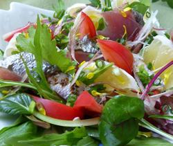

カツオのタタキサラダ風
- 調理時間：20 分
- （一人当たり）
- カロリー：118kcal
- たんぱく質：15.2g
- 脂質：0.4g
- 塩分：2.2g


＜４人分＞
- カツオのタタキ
- ２００ｇ
- 青ネギ
- ４～５本
- ミョウガ
- ２本
- ベビーリーフ
- １パック
- トマト
- １個
- 日向夏
- １個
- 小菊
- 適宜
- 【ドレッシング】
- ・ポン酢しょうゆ
- １２０ｍｌ
- ・おろしショウガ
- お好みで


- ポン酢しょうゆにおろしショウガを加えてドレッシングを作る。
青ネギは小口切りにする。 - カツオは平作りにする。ミョウガは千切りにする。トマトは食べやすい大きさのくし切りにする。
日向夏は皮をむいて乱切りにする。ベビーリーフは冷水にさらし、水気をよく切る。 - ②の材料をさっと混ぜ合わせ、皿に盛り付け、小菊の花弁と青ネギを散らす。
- ①のドレッシングをかける。
カツオのタタキサラダ風
薄着になる夏に向け、体力を落とさず体を引き締めるには、たんぱく質を摂りながら、効果を促すビタミン、ミネラル、食物繊維を上手に食べ合わせるのが成功の秘訣。このとき、生活習慣病を意識している方には魚介類がオススメです。新鮮な魚が手に入ったら、お刺身だけでなく、主食にもサラダにもアレンジして召し上がってほしいものです。
初ガツオは戻りガツオと異なり脂が少なくサッパリと食べられるのが特徴です。たんぱく質や鉄分が多く成長期の子どもからお年寄りまで幅広い年齢に必要な栄養素が豊富に含まれています。たっぷりの薬味野菜を添えることで食欲増進！消化吸収を助けます。旬のミョウガ、青シソは、抗酸化ビタミンと呼ばれる「ビタミンＣ」が含まれますので、酸化しやすい魚介類の脂肪酸との食べ合わせが良く、さらに鉄分の吸収率を高める効果もあり一石二鳥。賢く楽しくおいしく食べて、元気な夏をむかえましょう。